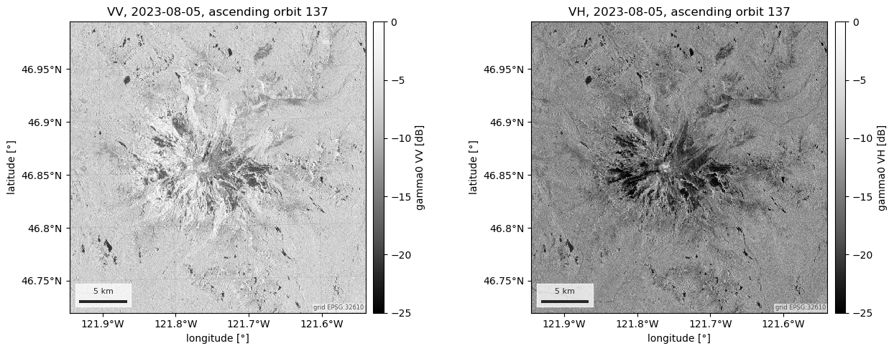
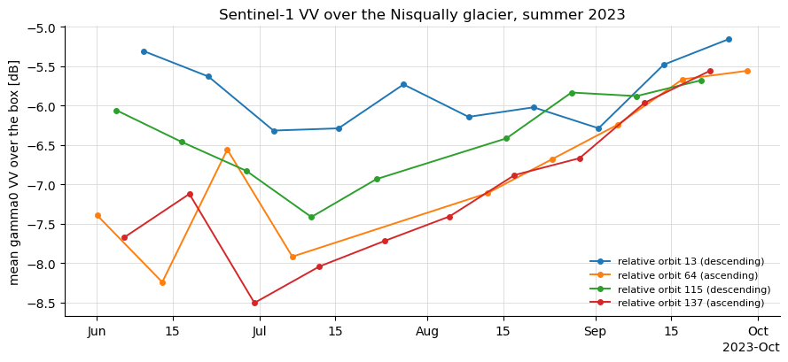

Note
Go to the end to download the full example code.
Sentinel-1 RTC backscatter and local incidence angle#
Sentinel-1 is C-band radar: it images through cloud, by day and by night, and its backscatter responds to the snowpack’s liquid water content and structure. That gives it a wide variety of applications, among them snowmelt phase delineation, wet snow detection and snow depth estimation. Radiometrically terrain-corrected (RTC) gamma0 removes the brightening and darkening the terrain itself imposes, so that slopes facing the radar can be compared with slopes facing away.
Three routes serve the backscatter. source="planetary-computer" (the
default) is 10 m scene-based RTC from 2014 onward, with no account.
source="opera-rtc-s1" is NASA/JPL’s 30 m burst-based OPERA RTC-S1 on ASF,
read through CMR-STAC with an Earthdata Login, and the only one that ships a
layover and shadow mask. source="gee" is the same OPERA product re-served
by Earth Engine (Earth Engine credentials).
The local incidence angle, the angle between the radar beam and the terrain
normal, has three routes of its own: the OPERA static layers (Earthdata),
a computation from any DEM (no account at all) and the legacy Earth Engine
routine. Every one of them is a property of a single acquisition geometry, so
nothing here is ever fused across relative orbits: without relative_orbit=
the loaders return one raster per track that crosses the AOI.
The figures show one pass in both polarisations, a summer of passes split by relative orbit, then two comparisons laid out track by track: OPERA’s published local incidence angle beside the DEM-computed one, and Planetary Computer’s backscatter beside OPERA’s with OPERA’s layover/shadow mask, each followed by descriptive statistics per track.
import logging
import sys
import matplotlib.pyplot as plt
import numpy as np
import pandas as pd
import easysnowdata as esd
aoi = (-121.94, 46.72, -121.54, 46.99) # Mount Rainier
nisqually = (-121.80, 46.82, -121.72, 46.88) # its Nisqually glacier side
# easysnowdata logs instead of printing; show its INFO lines on this page.
handler = logging.StreamHandler(sys.stdout)
handler.setFormatter(logging.Formatter("%(name)s: %(message)s"))
logging.getLogger("easysnowdata.sar").addHandler(handler)
logging.getLogger("easysnowdata.sar").setLevel(logging.INFO)
esd.parse_aoi(aoi) # the AOI as every loader below will see it
AOI(bounds=(-121.9400, 46.7200, -121.5400, 46.9900), clip=True)
Where the two products come from, and what each route asks for.
for product in ("sentinel-1-rtc", "sentinel-1-local-incidence-angle"):
for src in esd.catalog.get(product).sources:
print(
f"{product:34} {src.id:20} {src.title:40} "
f"{', '.join(src.requires) or 'no account'}"
)
sentinel-1-rtc planetary-computer Planetary Computer no account
sentinel-1-rtc opera-rtc-s1 OPERA RTC-S1 (ASF) earthdata
sentinel-1-rtc gee Earth Engine (OPERA) earthengine
sentinel-1-local-incidence-angle opera-static OPERA RTC-S1-STATIC (ASF) earthdata
sentinel-1-local-incidence-angle dem computed from the Copernicus DEM no account
sentinel-1-local-incidence-angle gee Earth Engine (S1_GRD angle band) earthengine
Two weeks of VV and VH in dB, one raster per pass. The orbit direction and
relative orbit ride along as coordinates on time: four tracks cross this
mountain every twelve days, two ascending (evening) and two descending
(morning).
2023-08-05T02:02:29 ascending relative orbit 137
2023-08-08T14:22:07 descending relative orbit 13
2023-08-12T01:54:20 ascending relative orbit 64
2023-08-15T14:14:17 descending relative orbit 115
One pass in both polarisations. VH is 6–8 dB weaker than VV over the same ground; the fixed −25 to 0 dB range keeps the two panels comparable.
first_ds = s1_ds.isel(time=0)
stamp = (
f"{str(first_ds['time'].values)[:10]}, {str(first_ds['sat:orbit_state'].values)} "
f"orbit {int(first_ds['sat:relative_orbit'])}"
)
fig, axes = plt.subplots(1, 2, figsize=(13, 5))
esd.plotting.map(
first_ds["vv"], ax=axes[0], cmap="Greys_r", vmin=-25, vmax=0,
title=f"VV, {stamp}", cbar_label="gamma0 VV [dB]",
) # fmt: skip
esd.plotting.map(
first_ds["vh"], ax=axes[1], cmap="Greys_r", vmin=-25, vmax=0,
title=f"VH, {stamp}", cbar_label="gamma0 VH [dB]",
) # fmt: skip
fig.tight_layout()

A summer of passes over the glacier as a time series. Each track looks at the mountain from its own direction, and the mean backscatter of the same box differs by about 2 dB between tracks for that reason alone. Mixed into one series that becomes a twelve-day sawtooth with nothing to do with the snow, which is why backscatter time series are split by relative orbit.
Decibels are a logarithm, so the box is averaged in linear power and converted afterwards: the mean of dB values is the geometric mean, which sits 0.7–1 dB below the true mean power over terrain this varied.
summer_ds = esd.sar.sentinel1.load(
nisqually, "2023-06-01/2023-09-30", bands=["vv"], resolution=100,
units="linear power",
) # fmt: skip
mean_vv_da = esd.processing.sar.linear_to_db(
summer_ds["vv"].mean(dim=["x", "y"])
).compute()
mean_vv_da.attrs = {"long_name": "mean gamma0 VV over the box", "units": "dB"}
fig, ax = plt.subplots(figsize=(9, 4.2))
for orbit in np.unique(mean_vv_da["sat:relative_orbit"].values):
orbit_vv_da = mean_vv_da.where(mean_vv_da["sat:relative_orbit"] == orbit, drop=True)
state = str(orbit_vv_da["sat:orbit_state"].values[0])
esd.plotting.timeseries(
orbit_vv_da,
ax=ax,
marker="o",
markersize=4,
label=f"relative orbit {orbit} ({state})",
)
ax.set_title("Sentinel-1 VV over the Nisqually glacier, summer 2023")
fig.tight_layout()

The local incidence angle, track by track#
The local incidence angle is a property of one acquisition geometry: which
track (relative orbit) the scene came from, whether the pass was ascending
or descending, and where in the swath a pixel sits. Without
relative_orbit= the loader says so and returns one raster per track
along a relative_orbit dimension; it never fuses them. The published
answer is OPERA’s per-burst static layer (the default
source="opera-static", Earthdata Login). The credential-free
source="dem" approximates it: for each track, the heading and look
direction come from a representative Planetary Computer scene, the
ellipsoidal incidence angle grows linearly across that scene’s swath, and
the terrain part is computed from the Copernicus DEM. Ascending passes look
east from the west (Sentinel-1 is right-looking), descending passes look
west from the east, so a slope that faces one track at a grazing angle faces
the other almost head-on.
opera_lia_ds = esd.sar.sentinel1.local_incidence_angle(aoi, resolution=60).compute()
dem_lia_ds = esd.sar.sentinel1.local_incidence_angle(
aoi, source="dem", resolution=60
).compute()
print(opera_lia_ds["local_incidence_angle"].dims, dict(opera_lia_ds.sizes))
for track in dem_lia_ds["relative_orbit"].values:
geometry_ds = dem_lia_ds.sel(relative_orbit=track)
print(
f"track {int(track):3d}: {str(geometry_ds['sat:orbit_state'].values):10} "
f"heading {float(geometry_ds['platform_heading']):6.1f}°, "
f"look azimuth {float(geometry_ds['look_azimuth']):6.1f}°"
)
Traceback (most recent call last):
File "/home/runner/work/easysnowdata/easysnowdata/docs/gallery/sar/plot_sentinel1.py", line 149, in <module>
opera_lia_ds = esd.sar.sentinel1.local_incidence_angle(aoi, resolution=60).compute()
~~~~~~~~~~~~~~~~~~~~~~~~~~~~~~~~~~~~~~~^^^^^^^^^^^^^^^^^^^^
File "/home/runner/work/easysnowdata/easysnowdata/easysnowdata/sar/sentinel1.py", line 768, in local_incidence_angle
tracks = _lia_from_opera(
parsed, time, resolution, crs, mask, chunks, relative_orbit, **kwargs
)
File "/home/runner/work/easysnowdata/easysnowdata/easysnowdata/sar/sentinel1.py", line 860, in _lia_from_opera
providers.stac.search(
~~~~~~~~~~~~~~~~~~~~~^
"cmr-asf", OPERA_STATIC_COLLECTION, parsed, time, **kwargs
^^^^^^^^^^^^^^^^^^^^^^^^^^^^^^^^^^^^^^^^^^^^^^^^^^^^^^^^^^
)
^
File "/home/runner/work/easysnowdata/easysnowdata/easysnowdata/providers/stac.py", line 138, in search
return client.search(**params).item_collection()
~~~~~~~~~~~~~~~~~~~~~~~~~~~~~~~~~~~~~~~^^
File "/home/runner/work/easysnowdata/easysnowdata/.pixi/envs/docs/lib/python3.13/site-packages/pystac_client/item_search.py", line 855, in item_collection
feature_collection = self.item_collection_as_dict.__wrapped__(self)
File "/home/runner/work/easysnowdata/easysnowdata/.pixi/envs/docs/lib/python3.13/site-packages/pystac_client/item_search.py", line 876, in item_collection_as_dict
for page in self.pages_as_dicts():
~~~~~~~~~~~~~~~~~~~^^
File "/home/runner/work/easysnowdata/easysnowdata/.pixi/envs/docs/lib/python3.13/site-packages/pystac_client/item_search.py", line 826, in pages_as_dicts
for page in self._stac_io.get_pages(
~~~~~~~~~~~~~~~~~~~~~~~^
self.url, self.method, self.get_parameters()
^^^^^^^^^^^^^^^^^^^^^^^^^^^^^^^^^^^^^^^^^^^^
):
^
File "/home/runner/work/easysnowdata/easysnowdata/.pixi/envs/docs/lib/python3.13/site-packages/pystac_client/stac_api_io.py", line 304, in get_pages
page = self.read_json(url, method=method, parameters=parameters)
File "/home/runner/work/easysnowdata/easysnowdata/.pixi/envs/docs/lib/python3.13/site-packages/pystac/stac_io.py", line 200, in read_json
txt = self.read_text(source, *args, **kwargs)
File "/home/runner/work/easysnowdata/easysnowdata/.pixi/envs/docs/lib/python3.13/site-packages/pystac_client/stac_api_io.py", line 167, in read_text
return self.request(href, *args, **kwargs)
~~~~~~~~~~~~^^^^^^^^^^^^^^^^^^^^^^^
File "/home/runner/work/easysnowdata/easysnowdata/.pixi/envs/docs/lib/python3.13/site-packages/pystac_client/stac_api_io.py", line 219, in request
raise APIError.from_response(resp)
pystac_client.exceptions.APIError: <html>
<head><title>502 Bad Gateway</title></head>
<body>
<center><h1>502 Bad Gateway</h1></center>
</body>
</html>
Left, OPERA’s published layer; right, the DEM route; one row per relative orbit. OPERA leaves layover and shadow as no data (the white patches) and names them in its mask; the DEM route has no such model and fills those pixels with a clipped angle.
tracks = [int(t) for t in opera_lia_ds["relative_orbit"].values]
fig, axes = plt.subplots(len(tracks), 2, figsize=(13, 4.8 * len(tracks)))
for row, track in enumerate(tracks):
state = str(dem_lia_ds["sat:orbit_state"].sel(relative_orbit=track).values)
esd.plotting.map(
opera_lia_ds["local_incidence_angle"].sel(relative_orbit=track),
ax=axes[row, 0], cmap="magma", vmin=0, vmax=90,
title=f"Track {track} ({state}): OPERA static layer",
) # fmt: skip
esd.plotting.map(
dem_lia_ds["local_incidence_angle"].sel(relative_orbit=track),
ax=axes[row, 1], cmap="magma", vmin=0, vmax=90,
title=f"Track {track} ({state}): computed from the Copernicus DEM",
) # fmt: skip
axes[row, 1].set_ylabel("") # the panels share their latitude axis
fig.tight_layout()
How good is the approximation, per track? The statistics use the pixels that are valid in both rasters and outside OPERA’s layover and shadow (the DEM route knows nothing about either, so a comparison there would only measure that). The DEM route runs one to two degrees low on average and agrees to a median of 5–6° at this 60 m grid, with a tenth of the pixels more than 12° off; the gap is the linear across-swath incidence model and the slope estimate on a resampled DEM, and it is largest on the steep terrain where a 60 m slope is least like the real one.
rows = []
for track in tracks:
published_da = opera_lia_ds["local_incidence_angle"].sel(relative_orbit=track)
approx_da = dem_lia_ds["local_incidence_angle"].sel(relative_orbit=track)
clear_da = opera_lia_ds["mask"].sel(relative_orbit=track) == 0
valid_da = clear_da & published_da.notnull() & approx_da.notnull()
gap_da = (approx_da - published_da).where(valid_da)
rows.append(
{
"relative orbit": track,
"pass": str(dem_lia_ds["sat:orbit_state"].sel(relative_orbit=track).values),
"pixels": int(valid_da.sum()),
"median OPERA [°]": float(published_da.where(valid_da).median()),
"median DEM [°]": float(approx_da.where(valid_da).median()),
"bias DEM−OPERA [°]": float(gap_da.mean()),
"median |Δ| [°]": float(np.nanmedian(np.abs(gap_da.values))),
"p90 |Δ| [°]": float(np.nanpercentile(np.abs(gap_da.values), 90)),
"RMSE [°]": float(np.sqrt((gap_da**2).mean())),
}
)
lia_stats_df = pd.DataFrame(rows).set_index("relative orbit")
print(lia_stats_df.round(1).to_string())
Backscatter, track by track#
The same two weeks from both catalogs. Planetary Computer’s scene-based RTC
and OPERA’s burst-based RTC are processed by different pipelines from the
same GRD, both against the Copernicus DEM. OPERA’s bursts are loaded one
track at a time, so a time step never mixes two geometries, and each step
carries its sat:relative_orbit. Left, Planetary Computer; middle, OPERA;
right, OPERA’s layover and shadow mask; one row per relative orbit. The
backscatter panels are not masked: they show what each product delivers
where the geometry defeats terrain correction. OPERA leaves radar shadow and
layover as no data (the white patches), while Planetary Computer fills those
pixels with values no RTC can make physical.
pc_ds = esd.sar.sentinel1.load(
aoi, "2023-08-01/2023-08-15", bands=["vv"], resolution=60
).compute()
opera_ds = esd.sar.sentinel1.load(
aoi, "2023-08-01/2023-08-15", bands=["vv"], source="opera-rtc-s1", resolution=60
).compute()
for when, orbit in zip(opera_ds["time"].values, opera_ds["sat:relative_orbit"].values):
print(f"OPERA {str(when)[:19]} relative orbit {orbit}")
def one_pass(s1_ds, track):
"""The first time step of *track* in *s1_ds*, as a (y, x) Dataset."""
return s1_ds.isel(
time=int(np.flatnonzero(s1_ds["sat:relative_orbit"].values == track)[0])
)
passes = [
t
for t in np.unique(pc_ds["sat:relative_orbit"].values)
if t in opera_ds["sat:relative_orbit"].values
]
fig, axes = plt.subplots(len(passes), 3, figsize=(19, 4.8 * len(passes)))
for row, track in enumerate(passes):
pc_pass_ds, opera_pass_ds = one_pass(pc_ds, track), one_pass(opera_ds, track)
day = str(pc_pass_ds["time"].values)[:10]
state = str(pc_pass_ds["sat:orbit_state"].values)
esd.plotting.map(
pc_pass_ds["vv"], ax=axes[row, 0], cmap="Greys_r", vmin=-25, vmax=0,
title=f"Track {track} ({state}), {day}: Planetary Computer RTC",
cbar_label="gamma0 VV [dB]",
) # fmt: skip
esd.plotting.map(
opera_pass_ds["vv"], ax=axes[row, 1], cmap="Greys_r", vmin=-25, vmax=0,
title=f"Track {track} ({state}), {day}: OPERA RTC-S1",
cbar_label="gamma0 VV [dB]",
) # fmt: skip
esd.plotting.categorical(
opera_pass_ds["mask"], ax=axes[row, 2], legend=row == 0,
title=f"Track {track}: OPERA layover and shadow",
) # fmt: skip
for ax in axes[row, 1:]:
ax.set_ylabel("") # the panels share their latitude axis
fig.tight_layout()
The statistics apply OPERA’s mask to both rasters (only pixels OPERA classes as neither layover nor shadow, valid in both) and compare the two products pixel by pixel, in dB. Medians are exact in dB (the median commutes with the logarithm); a difference in dB is the power ratio of the two products, which is what a radiometric comparison should measure; and the mean of those differences is the geometric-mean ratio, labelled “mean Δ” rather than a linear-domain bias. Their medians agree to a quarter of a dB on every track, Planetary Computer reading slightly brighter; the pixel-level spread (a median difference near 1.4 dB, an RMSE near 2.5 dB) is what two processors, two resamplings to a 60 m grid and speckle leave between them. The near-range tracks (13 and 64, the steeper incidence angles) lose three times as much of the mountain to layover as the far-range pair.
rows = []
for track in passes:
pc_pass_ds, opera_pass_ds = one_pass(pc_ds, track), one_pass(opera_ds, track)
valid_da = (
(opera_pass_ds["mask"] == 0)
& pc_pass_ds["vv"].notnull()
& opera_pass_ds["vv"].notnull()
)
pc_vv_da, opera_vv_da = (
pc_pass_ds["vv"].where(valid_da),
opera_pass_ds["vv"].where(valid_da),
)
diff_da = pc_vv_da - opera_vv_da
rows.append(
{
"relative orbit": int(track),
"pass": str(pc_pass_ds["sat:orbit_state"].values),
"date": str(pc_pass_ds["time"].values)[:10],
"pixels": int(valid_da.sum()),
"median PC [dB]": float(pc_vv_da.median()),
"median OPERA [dB]": float(opera_vv_da.median()),
"mean Δ PC−OPERA [dB]": float(diff_da.mean()),
"median |Δ| [dB]": float(np.nanmedian(np.abs(diff_da.values))),
"RMSE [dB]": float(np.sqrt((diff_da**2).mean())),
"layover/shadow [%]": float(
100
* (opera_pass_ds["mask"].isin([1, 2, 3])).sum()
/ opera_pass_ds["mask"].notnull().sum()
),
}
)
backscatter_stats_df = pd.DataFrame(rows).set_index("relative orbit")
print(backscatter_stats_df.round(2).to_string())
Total running time of the script: (0 minutes 53.613 seconds)